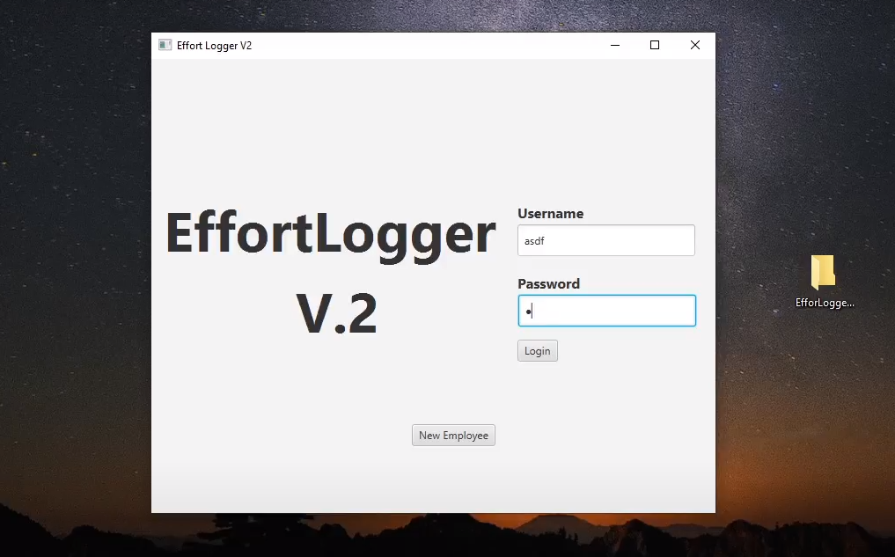
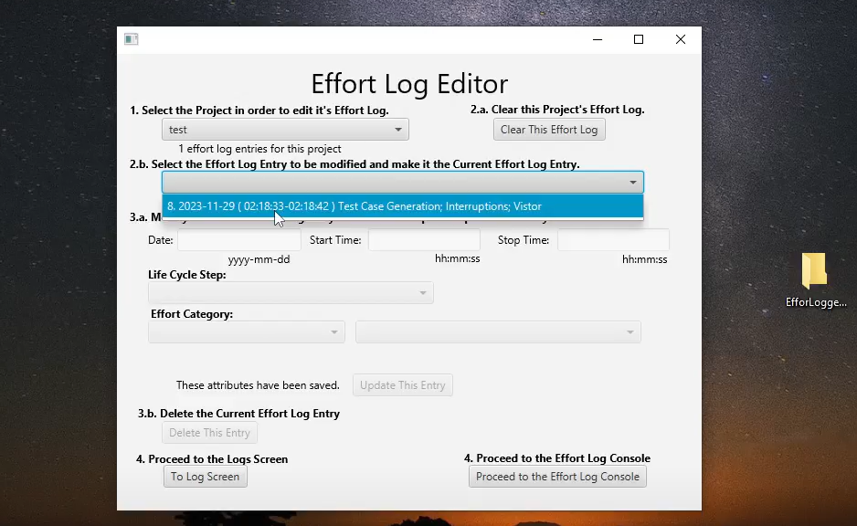
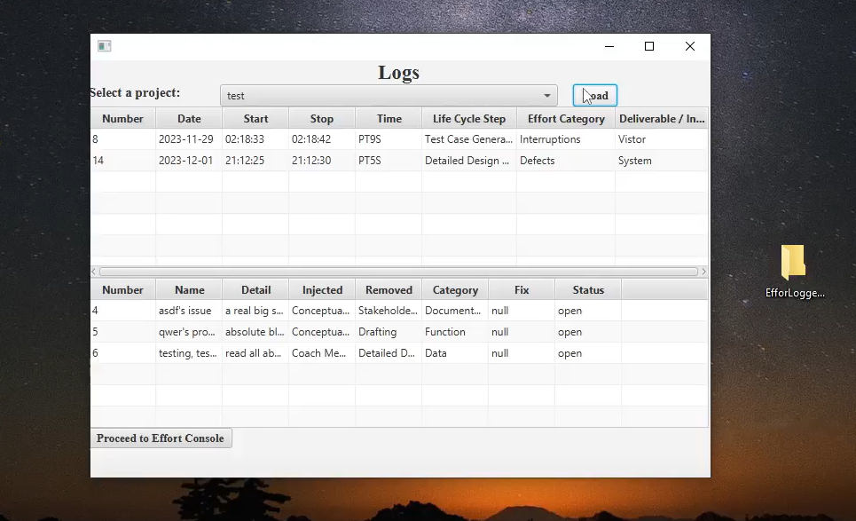

EffortLogger 2.0 is a revitalized project management tool designed to address the evolving needs of a data-driven company. Recognizing limitations in the existing Excel-based system, our team crafted a solution that prioritizes both enhanced efficiency and employee privacy.
Languages: Java, JavaFX, SQL
Back-End Development: SQL database, server-side scripting
Software Engineering: Agile methodologies, planning poker integration
Data Analysis: Anonymization, reporting, analytics dashboards
Security: Authentication, access control, audit trails
Balancing Transparency and Privacy: We understand the delicate balance between data-driven decision-making and individual privacy. EffortLogger 2.0 anonymizes individual data for reporting, while still allowing targeted improvement efforts through access to identifying information under specific circumstances. This ensures transparency while protecting employee confidentiality.
Boosting Security and Efficiency: The new system implements robust security measures, including a secure database, authentication protocols, and access control. We've also focused on streamlining workflows, introducing features like streamlined planning poker sessions, intuitive UI/UX design, and effortless activity logging.
Embracing Agile Practices: EffortLogger 2.0 supports large-scale data handling and agile methodologies. Its SQL database offers robust data management, while customizable reports allow for in-depth analysis of project progress and effort distribution. This empowers program managers with data-driven insights for effective decision-making.
Outcomes and Impact: The revamped EffortLogger has yielded significant benefits for both the company and its employees. Improved data-driven insights guide decision-making and optimize project management. Enhanced employee privacy fosters trust and satisfaction. Streamlined workflows lead to increased efficiency and productivity. Finally, the embrace of agile practices allows for better team collaboration and project adaptability.